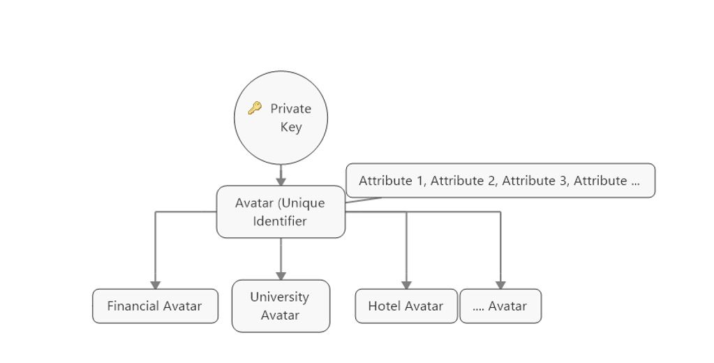

<section id="newsNmedia">
    <div class="container">
        <div class="title center">
            <h2>Blog</h2>
            <div class="col-md-12" style="text-align: center;">
                <h3 style="color: #1b6d85">Our approach to Digital identity</h3>
                <div style="text-align: center;text-align: justify">
                    <p>


                        <p>Digital identity has been a widely-discussed topic within the Blockchain space with many different
                            start-ups trying to make identity more convenient and relevant. As many Blockchain projects are
                            going from POCs (Proof of Concepts) to actual applications, the case of digital identity will
                            become increasingly relevant, and quite possibly integral in the enablement of taking decentralised
                            applications mainstream.
                        </p>
                        <p>The idea of smart contracts and using them within financial and non-financial applications begs an
                            effective identity management system as identity will have to enter the equation at one point
                            to prove who owns what and who did what along the audit trail.
                        </p>
                        <p> Although being pseudonymous is perceived as somewhat of an advantage in protocols such as Bitcoin,
                            being pseudonymous is not a strong trait when Blockchain technology and its applications become
                            implemented worldwide. We would need to know who we are dealing with and people are identified
                            by names and not a string of numbers. Thus, in many protocols, particularly open public Blockchains,
                            identity is left out at the protocol level.
                        </p>
                        <p> <b> The	missing	link</b>
                        </p>
                        <p> Digital Identity is the missing link that allows the concept of digital assets on a Blockchain to
                            flourish, smart contracts as an effective tool for business processes and financial applications
                            to play a role in a fairer digital banking system and financial inclusion. Thus, the value of
                            having identity embedded at the protocol level makes sense.
                        </p>
                        <p> Within our Metaverse Blockchain, a fully-fledged open source public Blockchain we believe identity
                            is important at the protocol level and makes it easier to build a verifiable function for applications
                            built on top of Metaverse. Moreover, we also notice the value of inviting intermediaries on-chain,
                            as they become significant when implementing identity to prove and verify someone’s claims to
                            relevant authorities.

                        </p>
                        <p> <b>Estonia	e-Residency	program</b>
                        </p>
                        <p> The Estonian government is one of the first to have developed a system where people can control their
                            own identities, through their e-Residency program. Through providing ID cards which have private
                            keys inside the chips, or allowing local sim cards in Estonia to have pre-installed software,
                            individuals are able to verify who they are.
                        </p>
                        <p> Using the Estonian e-Residency program digital ID what can individuals do?
                        </p>
                        <ul>
                            <li>Do e-banking</li>
                            <li>Open a business </li>
                            <li>Post a court claim through the internet and solve the case by never going to court and more.</li>
                        </ul>
                        <p>
                            The implications of this are massive, as it reduces cost and makes domestic and international business much faster.
                        </p>
                        <p>
                            The Estonian example is noteworthy as it has one of the highest levels of security that complies with the eIDAS regulation
                            in the European Union through the use of a physical chip. This piece of regulation makes digital
                            signatures accepted all over the EU, yet due to their centralised nature of servers, this still
                            poses a threat for a single point of attack.
                        </p>
                        <p>
                            The Estonian example is also important as it defines the next step for digital identity to truly be digital. Many questions
                            arise:
                        </p>
                        <p> Can we remove all paper from the equation?
                        </p>
                        <p> Can someone fully control their digital identity? How would someone who is stateless get their own
                            ID?
                        </p>
                        <p> Can identity be truly decentralised?
                        </p>
                        <p> As our lives are becoming more digital, how will ‘digital’ identity look like?
                        </p>
                        <p> Will we be connected under one whole system or several systems? Or will we be deadlocked by the structural
                            challenges the identity industry faces?
                        </p>
                        <p> Although these questions have been researched for quite some time, it’s refreshing to remind ourselves
                            the of the significance these questions have as we look to making digital identity a reality.

                        </p>
                        <p> <b>Metaverse	and	Digital	Identity</b>
                        </p>
                        <p> At Metaverse we are building the next steps of a digital identity world through custom built Avatars
                            (digital identity). We believe that these Avatars which will hold different pieces of our identities
                            can be taken across any border. In this model, one main Avatar will be linked to many different
                            avatars where these different avatars will serve for separate uses. Due to this model, we envision
                            a world where individuals are more in control of their identity and only show data that is needed.


                        </p>
                        <span style="max-width:800px">
                    <p style="font-size: 12px;font-style:italic;text-align: center" class="">
                        
                        <br>
                        HD	(Hierarchal	Deterministic)	design	model	of	Digital	Identity	on	Metaverse
                    </p>

</span>
                        <p>Each Avatar on Metaverse would have a unique identifier that is controlled by a master key pair and
                            off that other Avatars can be created for separate uses which would be attested by Oracles (intermediaries
                            such as governments, banks etc).
                        </p>
                        <p> Not only do we envision these second-tier Avatars to be attested by Oracles, but also believe that
                            attributes that are linked to the main Avatar will be attested by Oracles too. This would allow
                            for permanent and temporary Avatars to be created using the attested attributes. For example,
                            when checking into a hotel verification can be quicker. If the hotel asks for Attributes X, Y
                            and Z, a user would be able to create an Avatar for that specific scenario, upload a QR code
                            (which would point to the attested attributes X, Y and Z) for the hotel receptionist and he/she
                            will scan and if everything checks this will send a green tick symbol back to the hotel receptionist.
                            This is one of many use cases that can be applied and it is also important to point out that
                            attributes can also exist without being attested.
                        </p>
                        <p> With the continuous advancements of technology, the successful Estonian identity program and the
                            growing need to control personal data, digital identity will become more relevant for individuals,
                            machines and institutions across the world. This is the first blog post of the many blog posts
                            we will have regarding our journey of building digital identity on Metaverse and creating a New
                            Reality.
                        </p>
                </div>
            </div>
        </div>
    </div>
</section>